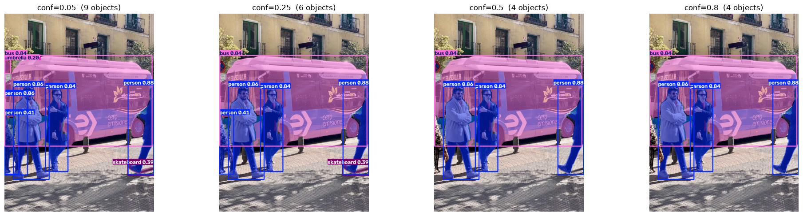
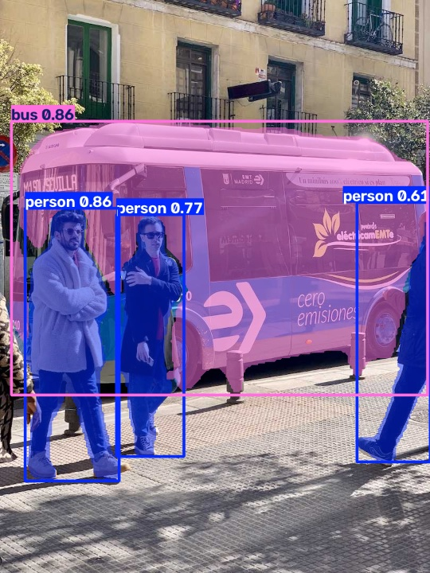
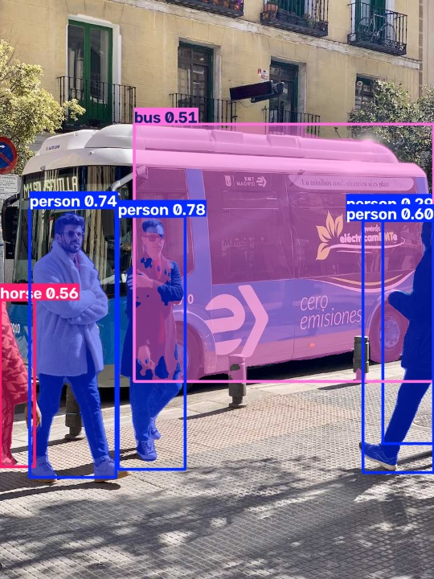
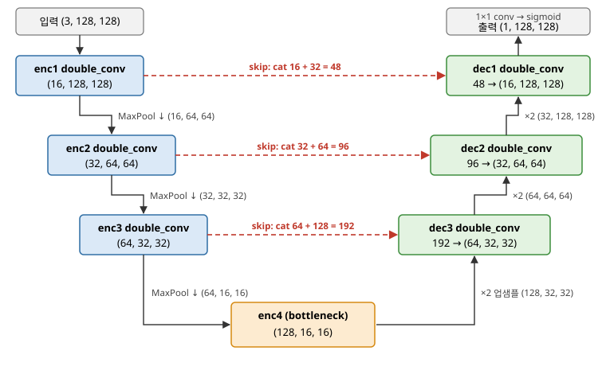
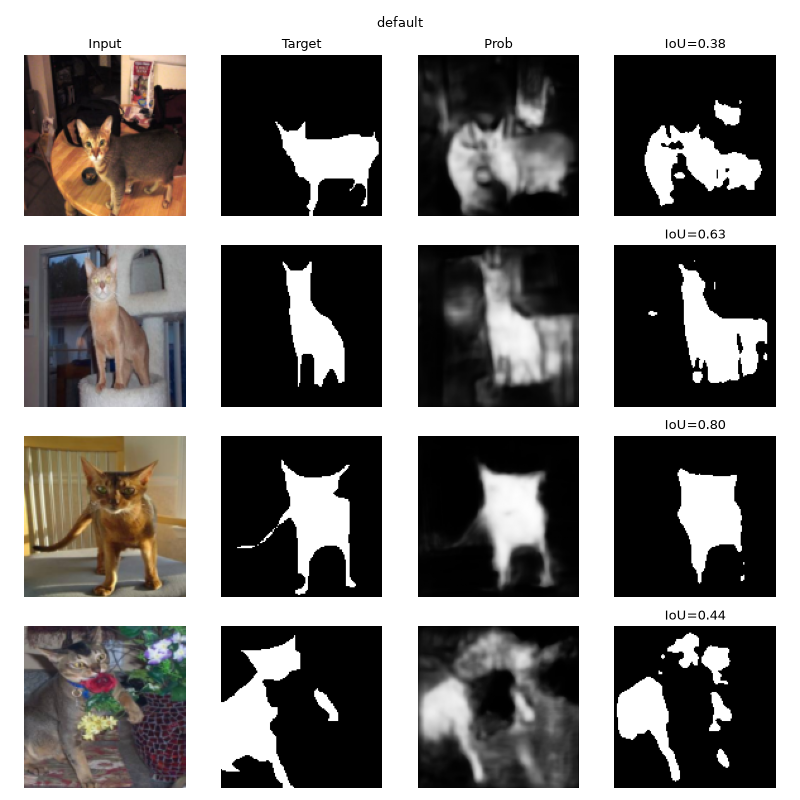
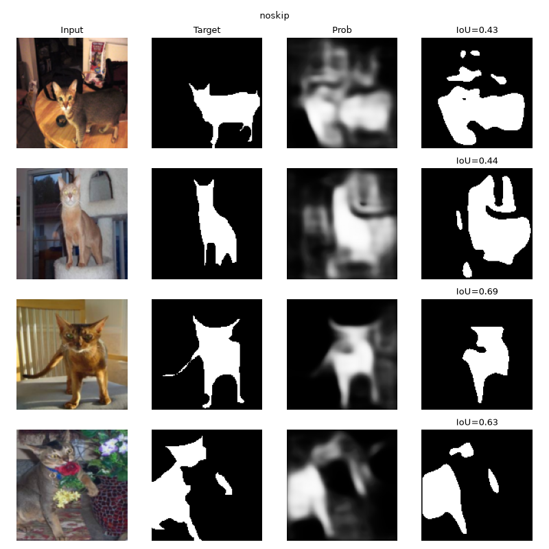
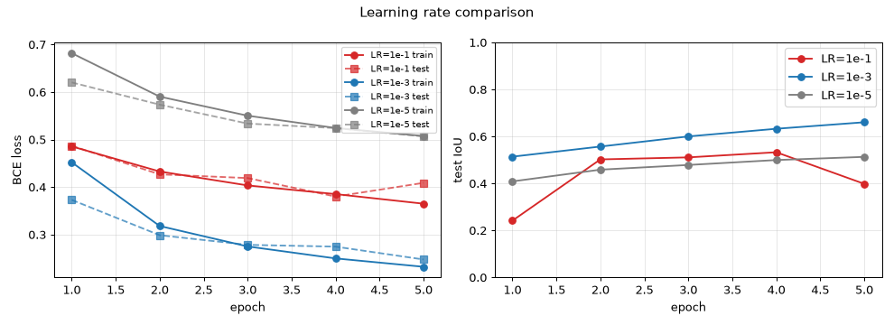
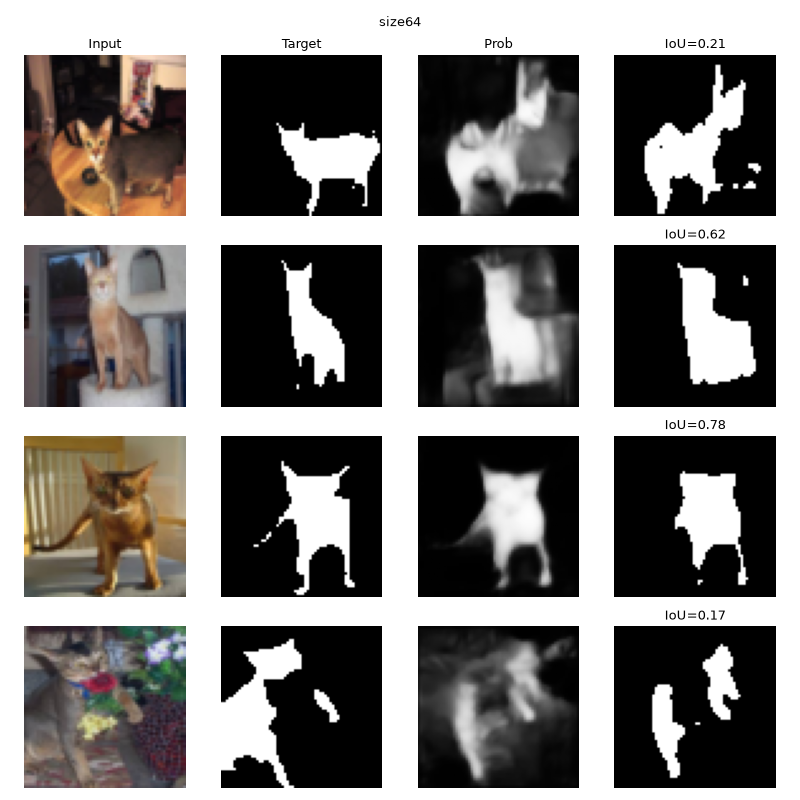
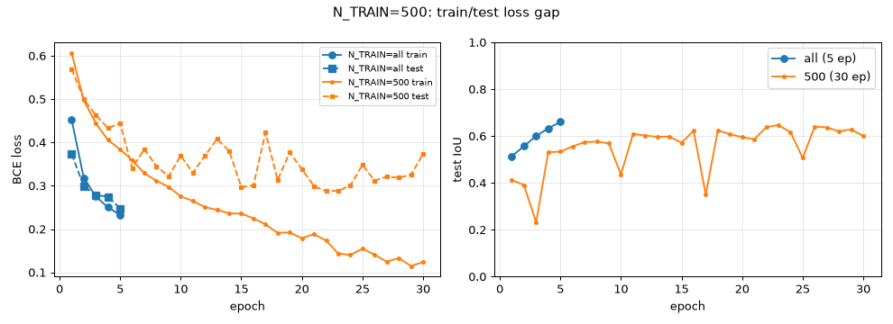
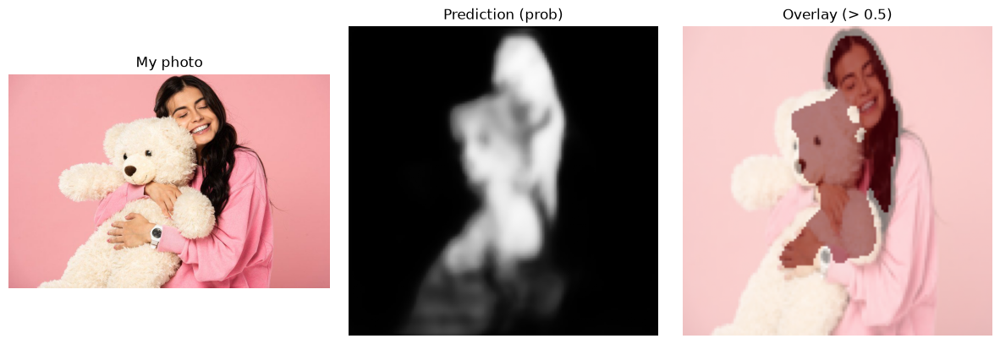

YOLO는 이미지 안의 후보 상자마다 "이 상자에 이 클래스의 물체가 있을 확률"인 신뢰도 점수를 냅니다. conf는 이 점수의 하한선입니다. 점수가 conf보다 낮은 후보는 결과에서 버리고, 같거나 높은 후보만 남깁니다.
교재 [프로그램 5-4]가 출력하는 score(box.conf)가 바로 이 신뢰도 점수입니다. 그래서 출력된 모든 상자의 score는 항상 conf 이상입니다. 실제로 기본값 conf=0.25로 돌렸을 때 가장 낮은 score는 skateboard의 0.392였고, 0.25보다 낮은 상자는 하나도 없었습니다. 다만 이 skateboard는 사진에 없는 물체로, 오른쪽 사람의 운동화를 잘못 본 오탐이었습니다. score는 모델의 확신일 뿐 정답 여부를 보장하지 않기 때문에, 0.25를 넘었다고 해서 모두 맞는 탐지는 아닙니다. conf를 낮추면 점수가 낮고 확실하지 않은 탐지까지 남아 개수가 늘고(오탐 증가), 높이면 확실한 것만 남아 개수가 줄어듭니다(놓침 증가).
iouYOLO는 격자의 여러 위치에서 상자를 예측하기 때문에, 한 사람 주변에 거의 같은 위치의 상자가 여러 개 겹쳐서 나옵니다. NMS(비최대 억제)는 이런 중복을 지우는 후처리입니다. 같은 클래스 상자들을 점수 순으로 정렬해 가장 높은 상자를 남기고, 그 상자와 겹치는 정도(IoU = 교집합 넓이 / 합집합 넓이)가 iou 값보다 큰 나머지 상자는 "같은 물체를 또 찾은 것"으로 보고 지웁니다.
그래서 같은 물체에 상자가 두 개 나오는 상황은 iou와 직접 관련됩니다. iou를 높게 잡으면(예: 0.9) 거의 완전히 겹쳐야만 지우기 때문에 중복 상자가 살아남아 한 물체에 상자가 두 개 그려질 수 있습니다. 반대로 낮게 잡으면(예: 0.3) 중복은 잘 지워지지만, 실제로 붙어 서 있는 서로 다른 두 사람의 상자까지 하나로 지워질 수 있습니다. 기본값 0.7은 이 둘 사이의 절충입니다.
box.xyxy의 네 숫자는 (x1, y1, x2, y2)입니다. (x1, y1)은 상자의 왼쪽 위 꼭짓점, (x2, y2)는 오른쪽 아래 꼭짓점의 픽셀 좌표이고, x는 가로(오른쪽으로 증가), y는 세로(아래로 증가) 방향입니다.
모델은 입력을 imgsz=640에 맞게 줄여서(이번 사진은 810×1080 → 480×640, 비율 유지) 그 좌표계에서 상자를 예측합니다. 하지만 ultralytics는 후처리에서 줄인 배율과 가장자리 여백(letterbox)을 기억해 두었다가, 예측 좌표를 다시 원본 크기로 되돌려(scale back) 돌려줍니다. 그래서 결과가 원본 이미지 픽셀 기준으로 나오고, 실제로 bus 상자의 x2가 800.5처럼 640보다 큰 값이 나왔습니다. 덕분에 원본 사진 위에 상자를 바로 그릴 수 있습니다.
yolov8n.pt(탐지)는 물체마다 경계 상자, 클래스, 점수만 출력합니다. yolov8n-seg.pt(인스턴스 분할)는 여기에 더해 물체마다 픽셀 단위 마스크(r.masks, (물체 수, H, W)의 0/1 텐서)를 출력합니다. 그래서 상자 안에서 실제로 물체가 차지하는 모양과 면적까지 알 수 있습니다. 예를 들어 bus는 상자가 화면 대부분을 덮지만 마스크 면적은 29.7%였습니다. 대신 마스크를 만드는 부분이 추가되어 파라미터가 더 많습니다(yolov8n-seg 약 341만 개).
두 모델 모두 학습 없이 바로 쓸 수 있는 이유는 사전 학습된 모델이기 때문입니다. 개발사가 대규모 COCO 데이터셋(사람, 자동차, 버스, 개, 고양이 등 COCO 80 클래스)으로 미리 학습해 둔 가중치가 .pt 파일에 들어 있어서, 불러오기만 하면 이 80개 클래스에 속하는 물체를 곧바로 탐지하고 분할할 수 있습니다. 반대로 80개 클래스에 없는 물체는 찾지 못하고, 찾게 하려면 추가 학습(미세 조정)이 필요합니다.
MaxPool2d(2)는 2×2 영역마다 최댓값 하나만 남겨 특징 맵의 높이와 너비를 각각 절반으로 줄입니다(예: 64×64 → 32×32). 채널 수는 그대로입니다. F.interpolate(scale_factor=2)는 보간으로 높이와 너비를 각각 2배로 키웁니다(예: 32×32 → 64×64). 이것도 채널 수는 그대로입니다.
인코더는 합성곱과 풀링으로 크기를 줄여 가면서, "무엇이 있는가"를 나타내는 넓은 범위의 추상적인 특징을 뽑아냅니다. 디코더는 업샘플링으로 크기를 다시 키워 가면서, 그 특징을 원래 해상도로 되돌려 픽셀마다 "물체인가 아닌가"를 정하는 분할 지도를 만듭니다.
교재 UNetMini에서 입력(1채널, 64×64)은 enc1을 지나 x1 = (8, 64, 64)가 됩니다. 이것을 풀링하면 (8, 32, 32), enc2를 지나면 (16, 32, 32)이고, 이를 2배 업샘플링한 것이 x3 = (16, 64, 64)입니다. x1과 x3은 높이와 너비가 같으므로 torch.cat(..., dim=1)로 채널 축(dim=1)을 따라 이어 붙일 수 있고, 채널이 8 + 16 = 24인 (24, 64, 64)가 됩니다. 그래서 dec1의 입력 채널이 24입니다.
스킵 연결이 없으면 디코더는 풀링으로 한 번 줄었다가 보간으로 키운 x3만 받습니다. 풀링에서 2×2 중 최댓값 하나만 남기면서 버려진 세밀한 위치 정보(가장자리가 정확히 어느 픽셀인지)는 업샘플링으로 되살릴 수 없습니다. 따라서 디코더는 고해상도의 공간 정보와 경계 정보를 잃고, 물체 위치는 대충 맞아도 가장자리가 뭉개지고 흐릿한 마스크를 만들게 됩니다.
이 과제는 픽셀마다 "반려동물(1)인가, 아닌가(0)"를 고르는 픽셀 단위 이진 분류입니다. sigmoid는 출력 1채널 값을 0~1 사이로 눌러 각 픽셀이 반려동물일 확률로 바꿔 줍니다. BCELoss(이진 교차 엔트로피)는 이 확률과 0/1 정답 사이의 차이를 재는, 이진 분류에 맞는 손실입니다. 정답에 가까운 확률을 내면 손실이 0에 가까워지고, 확신을 갖고 틀리면 손실이 크게 커집니다.
반려동물/배경/경계 3개 클래스를 모두 맞히려면 다중 클래스 분류로 바꿔야 합니다. 마지막 1×1 합성곱의 출력 채널을 1에서 3으로 늘려 (B, 3, H, W)의 클래스별 점수(logit)를 내고, sigmoid와 BCELoss 대신 nn.CrossEntropyLoss를 씁니다(내부에서 채널 방향 softmax를 계산하므로 출력에 따로 softmax를 붙이지 않습니다). 정답도 0/1 마스크가 아니라 픽셀마다 클래스 번호 0, 1, 2(trimap 값 1, 2, 3에서 1을 뺀 값)를 담은 (B, H, W) 정수(long) 텐서로 바꿔야 합니다. 예측할 때는 채널 방향 argmax로 픽셀마다 클래스를 고릅니다.
실행 환경: 로컬 PC, NVIDIA GeForce RTX 5060 Laptop GPU, PyTorch 2.14(CUDA 13.0), ultralytics. 프로그래밍 A의 테스트 이미지는 bus.jpg(810×1080)입니다. 추론 시간은 제출한 노트북의 GPU 측정값이고, 괄호 안은 같은 PC에서 GPU 없이 CPU로 먼저 돌렸을 때의 값입니다.
CONF 바꾸기| CONF | 탐지 개수 | 평균 점수 | 새로 생기거나 사라진 물체 |
|---|---|---|---|
| 0.05 | 9 | 0.506 | 새로 생김. umbrella(0.20)와 stop sign(0.07)은 왼쪽 끝의 같은 표지판 하나를 잡은 것이고, 두 사람을 한꺼번에 덮는 person(0.06)도 생김 |
| 0.25 | 6 | 0.704 | 기준. 실제 물체 5개(person 4, bus 1)를 모두 찾고, 오른쪽 사람의 운동화를 skateboard(0.39)로 잘못 잡은 오탐 1개 |
| 0.5 | 4 | 0.854 | 왼쪽 끝에 잘린 실제 person(0.41)이 사라져 놓침이 생기고, 오탐 skateboard(0.39)도 사라짐 |
| 0.8 | 4 | 0.854 | 0.5와 같음. 남은 4개(person 0.88/0.86/0.84, bus 0.84)가 모두 0.8 이상 |
실행하기 전에는 conf를 낮추면 탐지가 늘고, 늘어난 탐지는 대부분 틀린 것이리라 예상했습니다.
실제로 conf를 0.25에서 0.05로 낮추자 탐지가 6개에서 9개로 늘었습니다. 새로 생긴 것은 umbrella(0.20), stop sign(0.07), 이미 찾은 사람들과 겹친 큰 person(0.06)처럼 모두 점수가 낮은 애매한 탐지였습니다. umbrella와 stop sign은 상자 좌표가 똑같은데, 사진 왼쪽 끝에 반만 보이는 둥근 교통 표지판 하나를 두 클래스로 각각 잡은 것입니다. 실제로는 우산도 정지 표지판도 아니므로 오탐입니다. person(0.06)도 왼쪽 두 사람을 한꺼번에 덮는 상자라서 오탐입니다. 새로 생긴 3개가 모두 오탐이었으므로 예상이 맞았습니다.
이렇게 되는 이유는 모델이 모든 후보 상자에 점수를 매기기 때문입니다. 모델은 배경 일부나 물체 조각처럼 "조금은 비슷한" 영역에도 작은 점수를 줍니다. conf는 이런 후보를 걸러 내는 문턱이므로, 문턱을 낮추면 원래 버려지던 낮은 점수의 후보가 그대로 결과에 남습니다. 그래서 개수는 늘지만 평균 점수는 0.704에서 0.506으로 떨어집니다.
기본값 0.25에서도 오탐이 하나 있었습니다. 사진에 skateboard는 없는데, 오른쪽 사람의 운동화와 그 그림자를 skateboard(0.39)로 잡았습니다. 납작하고 길쭉한 물체가 사람 발밑에 있는 모습이 COCO 학습 데이터의 스케이트보드 사진과 비슷했기 때문으로 보입니다. conf를 0.5로 올리자 이 오탐은 사라졌지만, 왼쪽 끝에 몸의 일부만 보이는 실제 사람(0.41)도 함께 사라져 놓침이 생겼습니다. 오탐과 실제 물체의 점수가 둘 다 0.4 근처라서, conf 하나로는 오탐만 골라 지울 수 없었던 것입니다. 0.8에서도 0.5와 결과가 같은 것은 남은 4개의 점수가 모두 0.84 이상이었기 때문입니다. 결국 conf는 놓침과 오탐 사이의 절충을 정하는 값입니다. 이 사진에서는 0.25가 실제 물체 5개를 모두 찾는 대신 오탐 1개를 허용했고, 0.5는 오탐을 없애는 대신 사람 1명을 놓쳤습니다.

IMGSZ 바꾸기| IMGSZ | 탐지 개수 | 추론 시간(ms) | 달라진 점 |
|---|---|---|---|
| 320 | 4 | 21.1 (CPU 29.9) | 왼쪽 끝 잘린 실제 person을 놓침. 대신 오탐 skateboard도 사라져 4개 모두 맞는 탐지. 평균 점수 0.776 |
| 640 | 6 | 20.2 (CPU 59.5) | 기준. 실제 물체 5개를 모두 찾았고 오탐 skateboard(운동화) 1개. 평균 점수 0.704 |
| 1280 | 6 | 27.3 (CPU 196.2) | 왼쪽 끝 잘린 사람을 horse(0.56)로 오인하고, 오른쪽 사람에 중복 상자(0.29)가 생겨 오탐 2개. bus 상자가 뒷부분만 덮고 점수 0.51로 하락. skateboard 오탐은 사라짐. 평균 점수 0.579 |
입력 한 변을 2배로 키우면 픽셀 수와 계산량은 4배로 늘어납니다. CPU에서는 이것이 그대로 드러나 추론 시간이 29.9 → 59.5 → 196.2ms로 크게 늘었습니다. 반면 GPU에서는 21.1 → 20.2 → 27.3ms로 거의 변하지 않았습니다. GPU는 수천 개의 코어로 픽셀을 동시에 계산하기 때문에, 사진 한 장 정도의 계산량으로는 GPU를 다 채우지 못하고, 데이터를 GPU로 옮기고 커널을 실행하는 고정 비용이 시간의 대부분을 차지하기 때문입니다. 1280에서 처음으로 시간이 눈에 띄게 늘어난 것은 계산량이 그 고정 비용을 넘어서기 시작했다는 뜻입니다. 탐지 결과를 보면 320에서는 화면 왼쪽 끝에 몸의 일부만 보이는 사람을 놓쳤고, 640에서는 찾았습니다.
이 차이는 격자(stride)로 설명할 수 있습니다. YOLOv8은 입력을 stride 8, 16, 32의 격자로 나누고, 격자 칸마다 물체를 예측합니다. 640 입력이면 가장 촘촘한 격자가 80×80칸이지만, 320이면 40×40칸으로 줄어듭니다. 원본 사진은 그대로인데 입력을 줄이면 물체가 차지하는 픽셀 수도 줄어듭니다. 왼쪽 끝 사람은 화면에 보이는 폭이 원본에서 약 78픽셀인데, 320 입력에서는 약 23픽셀, 즉 stride 8 격자로 3칸 정도밖에 되지 않습니다. 이렇게 작아지면 사람이라고 판단할 특징이 풀링 과정에서 거의 사라져 탐지되지 않습니다. 입력을 키우면 같은 물체가 더 많은 격자 칸에 걸쳐 세밀한 특징이 살아남으므로 작은 물체를 찾기 쉬워집니다.
흥미로운 점은 320에서 오탐 skateboard도 함께 사라졌다는 것입니다. 운동화 역시 작아져서, 모델이 그것을 다른 물체로 착각할 만큼의 세부 모양도 보이지 않게 된 것입니다. 즉 입력을 줄이면 작은 실제 물체를 놓치는 대신 작은 영역에서 생기는 오탐도 줄어듭니다.
다만 1280에서는 결과가 오히려 나빠졌습니다. 왼쪽 끝 사람의 빨간 옷을 horse로 오인했고, bus 상자는 버스 뒷부분만 덮으면서 점수가 0.84에서 0.51로 떨어졌고, 오른쪽 사람에게 상자가 하나 더 생겼습니다. 모델이 640 크기로 학습되었기 때문에, 너무 키우면 물체가 학습 때보다 훨씬 크게 보입니다. 그러면 버스처럼 큰 물체는 stride 32 격자의 수용 영역으로도 전체를 한 번에 보지 못해 일부만 잡히고, 세밀한 질감이 다른 물체처럼 보이기 쉬워집니다. 그래서 1280에서는 사람을 말로 보거나 한 사람에게 상자를 두 개 그리는 새로운 오탐이 생겼습니다. 결국 imgsz는 작은 물체를 찾는 능력과 속도, 오탐 사이의 절충이고, 학습 크기인 640 근처가 가장 안정적이었습니다.


| 모델 | 파라미터 수 | 추론 시간(ms) | 탐지 개수 | 평균 점수 |
|---|---|---|---|---|
| yolov8n-seg | 3,409,968 | 21.5 (CPU 59.2) | 6 | 0.704 |
| yolov8s-seg | 11,821,056 | 23.8 (CPU 146.7) | 6 | 0.772 |
| yolov8m-seg | 27,285,968 | 23.6 (CPU 339.8) | 6 | 0.754 |
n → s → m으로 갈수록 파라미터가 약 3.4배, 다시 2.3배 늘었고(약 341만 → 1,182만 → 2,729만), CPU 추론 시간도 59 → 147 → 340ms로 거의 비례해서 늘었습니다. GPU에서는 21.5 → 23.8 → 23.6ms로 차이가 거의 없었는데, B2와 같은 이유로 사진 한 장으로는 GPU가 남아돌아 모델 크기의 차이가 시간에 드러나지 않았기 때문입니다. 영상처럼 여러 장을 연속으로 처리하거나 GPU가 약한 기기에서는 CPU에서처럼 차이가 커집니다. 탐지 개수는 모두 6개였고, 세 모델 모두 실제 물체 5개(사람 4명, 버스 1대)를 다 찾은 뒤 오탐을 하나씩 더했습니다. 다만 오탐의 내용은 달랐습니다. n은 오른쪽 사람의 운동화를 skateboard로 잡았고, s는 가운데 사람의 검은 재킷 사이로 보이는 빨간 티셔츠를, m은 왼쪽 사람의 흰 코트 옷깃 사이의 틈을 tie(넥타이)로 잡았습니다. 사진 속 누구도 넥타이를 매고 있지 않으므로 둘 다 오탐입니다. 가슴 한가운데의 세로로 긴 띠 모양이 넥타이와 비슷해 보였던 것으로 생각합니다. 평균 점수는 n보다 s, m이 높았습니다. 실제 물체에 대한 점수가 n은 0.84~0.88인 데 비해 s는 0.88~0.90, m은 0.89~0.93이었고, 왼쪽 끝 사람도 n은 0.41, s는 0.72로 훨씬 확신 있게 맞혔습니다. 큰 모델일수록 일부만 보이는 물체처럼 어려운 경우를 더 확신 있게 맞히는 것입니다. 오탐의 점수도 n의 skateboard 0.39에 비해 s의 tie 0.37, m의 tie 0.29로 모델이 클수록 낮아서, conf를 조금만 올려도 지우기가 쉬웠습니다.
모델은 상황에 따라 고르겠습니다. 스마트폰, 라즈베리파이, 웹캠 실시간 처리처럼 연산 자원이 적거나 초당 프레임 수가 중요할 때는 yolov8n-seg를 쓰겠습니다. 이런 기기에서는 CPU 측정처럼 모델 크기가 곧 속도 차이로 나타나는데, n은 파라미터가 341만 개로 가장 가볍고 빠르면서도 큰 물체는 충분히 잘 찾기 때문입니다. 일반 GPU가 있는 서비스처럼 실시간성과 정확도를 함께 원할 때는 yolov8s-seg를 고르겠습니다. 이번 실험에서 평균 점수가 가장 높았고, CPU 시간은 m의 절반 이하이며 GPU에서는 n과 거의 같아서 가성비가 가장 좋았습니다. 의료 영상이나 오프라인 분석처럼 시간보다 정확도가 중요하고, 작거나 겹친 물체가 많아 더 큰 표현력이 필요할 때는 yolov8m-seg가 알맞습니다.
그림: 내가 만든 U-Net (풀링 3번, BASE_CH 16, 입력 128×128)

| 풀링 횟수 | 파라미터 수 | 최종 test IoU | 에폭당 시간(초) |
|---|---|---|---|
| (내 선택) − 1 = 2 | 118,913 | 0.576 | 6.3 |
| (내 선택) = 3 | 488,705 | 0.661 | 6.8 |
| (내 선택) + 1 = 4 | 1,965,569 | 0.687 | 8.4 |
구조는 그림과 같습니다. 인코더는 enc1에서 (16, 128, 128)을 만들고, 풀링할 때마다 크기를 절반으로 줄이고 채널을 2배로 늘려 enc2 (32, 64, 64), enc3 (64, 32, 32)을 거쳐 bottleneck인 enc4 (128, 16, 16)에 도달합니다. 디코더는 bottleneck 출력을 2배로 키운 (128, 32, 32)에 enc3의 64채널을 이어 붙여 192채널을 만들고 dec3에서 (64, 32, 32)로 줄입니다. 같은 방식으로 dec2는 64 + 32 = 96채널을 받아 (32, 64, 64)를, dec1은 32 + 16 = 48채널을 받아 (16, 128, 128)을 만듭니다. 마지막 1×1 합성곱과 sigmoid가 (1, 128, 128) 확률 지도를 냅니다.
풀링 횟수는 3번으로 정했습니다. 128×128 입력을 3번 줄이면 bottleneck이 16×16이 되는데, 이 단계의 한 칸은 원본의 8×8 픽셀에 해당하고 3×3 합성곱을 여러 번 거치면 반려동물 몸 전체를 한 번에 볼 수 있을 만큼 수용 영역이 넓어집니다. 그러면서도 파라미터가 약 49만 개로 가벼워서, 교재의 UNetMini(풀링 1번)보다 충분히 깊으면서 학습이 빠른 중간 지점이라고 판단했습니다.
풀링을 2번으로 줄이자 IoU가 0.661에서 0.576으로 크게 떨어졌습니다. bottleneck이 32×32에 머물러 수용 영역이 좁기 때문에, 모델이 털 무늬나 가구 같은 국소적인 질감만 보고 판단해 동물 전체의 모양을 잘 잡지 못합니다. 4번으로 늘리면 IoU가 0.687로 조금 더 올랐지만, 파라미터는 4배인 약 197만 개가 되었고 시간도 6.8초에서 8.4초로 늘었습니다. 시험 손실이 에폭마다 0.276 → 0.333 → 0.278로 크게 흔들려 학습도 덜 안정적이었습니다. 5에폭 기준으로는 4번이 가장 높았지만, 늘어나는 파라미터에 비해 얻는 IoU가 0.026에 그쳐 3번을 유지했습니다.
파라미터 수가 한 단계마다 약 4배씩 느는 이유는 채널 수에 있습니다. 3×3 합성곱 하나의 가중치는 9 × 입력 채널 × 출력 채널이라서, 입력과 출력 채널이 모두 2배가 되면 가중치는 4배가 됩니다. 풀링을 한 번 늘리면 가장 깊은 곳에 채널이 2배인 새 단계가 생깁니다. 풀링 3번일 때 가장 깊은 enc4(64 → 128채널)의 가중치가 9 × 64 × 128 + 9 × 128 × 128 ≈ 22만 개, 그 바로 위 dec3(192 → 64채널)가 약 15만 개로, 이 둘이 전체 49만 개의 약 75%를 차지합니다. 풀링 4번에서는 enc5(128 → 256채널)가 약 88만 개, dec4(384 → 128채널)가 약 59만 개로 새로 추가되어 전체가 약 197만 개가 됩니다. 반대로 풀링 2번에서는 가장 무거운 이 두 단계가 빠져 약 12만 개로 줄어듭니다. 즉 파라미터는 거의 가장 깊은 단계가 결정하고, 그 단계의 채널 수가 2배가 될 때마다 약 4배가 됩니다.
| USE_SKIP | 파라미터 수 | 최종 test IoU |
|---|---|---|
| True | 488,705 | 0.661 |
| False | 440,321 | 0.642 |


스킵 연결을 끄면 디코더 입력 채널이 줄어 파라미터가 약 4.8만 개 줄었고, 최종 IoU는 0.661에서 0.642로 낮아졌습니다. 숫자 차이는 작지만 예측 그림의 차이는 뚜렷합니다. 스킵 연결이 있으면 확률 지도에서 고양이의 귀 끝, 다리 사이 틈, 꼬리 같은 가는 부분의 윤곽이 살아 있습니다. 스킵 연결을 끄면 확률 지도 전체가 안개처럼 뿌옇게 번지고, 0.5로 자른 마스크도 둥근 덩어리 모양이 되어 귀와 다리가 몸통에 뭉개져 붙거나 사라졌습니다. 두 번째 고양이의 경우 몸통 오른쪽 배경까지 큰 덩어리로 칠해졌습니다.
이유는 정보의 흐름에 있습니다. 스킵 연결이 없으면 디코더는 16×16 bottleneck 특징만 받아 이를 보간으로 키워야 합니다. 풀링에서 이미 버려진 세밀한 위치 정보는 보간으로 되살릴 수 없어서, 디코더는 "대략 이 근처에 동물이 있다"는 정보만으로 128×128 마스크를 그리게 되고 경계가 흐려집니다. 스킵 연결은 같은 해상도의 인코더 특징(128×128의 가장자리, 색 경계 정보)을 디코더에 직접 넘겨주므로, 디코더가 깊은 층의 "무엇인가" 정보와 얕은 층의 "정확히 어디인가" 정보를 합쳐 경계를 정확히 그릴 수 있습니다. IoU 차이가 그림 차이보다 작은 것은, IoU가 넓은 몸통 영역의 겹침에 크게 좌우되고 경계 근처의 얇은 픽셀은 전체 면적에서 차지하는 비율이 작기 때문입니다.
| BASE_CH | 파라미터 수 | 최종 test IoU | 에폭당 시간(초) |
|---|---|---|---|
| 8 | 122,817 | 0.656 | 6.0 |
| 16 | 488,705 | 0.661 | 6.8 |
| 32 | 1,949,697 | 0.670 | 14.4 |
BASE_CH를 2배로 늘릴 때마다 파라미터는 약 4배(12만 → 49만 → 195만)가 되었습니다. 모든 층의 입력과 출력 채널이 함께 2배가 되므로, 9 × 입력 × 출력인 합성곱 가중치가 4배가 되기 때문입니다. 반면 IoU는 0.656 → 0.661 → 0.670으로 조금씩만 올랐습니다. 시간은 8에서 16으로는 6.0초에서 6.8초로 거의 늘지 않았지만, 32에서는 14.4초로 2배 넘게 늘었습니다. 작은 모델에서는 GPU 계산보다 데이터 전달 같은 고정 비용이 시간을 좌우하다가, 32부터는 계산량 자체가 커져 시간이 늘어나기 시작한 것입니다.
폭을 늘리면 층마다 더 많은 종류의 특징(털 무늬, 색, 가장자리 방향 등)을 동시에 표현할 수 있어 정확도가 오르는 것이 득입니다. 대신 파라미터, 메모리, 계산 시간이 4배씩 늘고, 학습 데이터에 비해 모델이 너무 커지면 과적합 위험도 커지는 것이 실입니다. 이번 실험에서는 4배의 파라미터를 들여 얻은 IoU가 0.005~0.009에 그쳐 효율이 낮았습니다. 같은 비용을 들인다면 폭보다 깊이를 늘린 경우(B4의 풀링 4번, 비슷한 197만 개로 IoU 0.687)가 더 효과적이었습니다. 깊이를 늘리면 수용 영역이 넓어져 동물 전체 모양을 보는 능력이 직접 좋아지기 때문입니다.
| LR | 1에폭 뒤 train loss | 마지막 train loss | 최종 test IoU |
|---|---|---|---|
| 1e-1 | 0.4857 | 0.3652 | 0.399 |
| 1e-3 | 0.4523 | 0.2324 | 0.661 |
| 1e-5 | 0.6819 | 0.5076 | 0.513 |

1e-3에서는 학습 손실과 시험 손실이 함께 꾸준히 내려가고 IoU도 0.51에서 0.66까지 매끄럽게 올라, 가장 전형적인 좋은 학습 곡선이 나왔습니다.
1e-1에서는 1에폭 손실은 1e-3과 비슷했지만, 이후 0.37 근처에서 더 내려가지 못했습니다. 시험 IoU는 0.24 → 0.50 → 0.51 → 0.53 → 0.40으로 크게 오르내렸습니다. 학습률이 너무 크면 한 번의 갱신으로 가중치가 손실이 낮은 골짜기를 지나쳐 반대편으로 넘어가 버립니다. 그래서 최저점 근처를 계속 왔다 갔다 하며 내려앉지 못하고, 갱신마다 모델이 크게 바뀌어 시험 성능이 불안정해집니다. 배치 정규화가 값의 폭주를 어느 정도 막아 손실이 발산하지는 않았지만, 더 정밀하게 맞추는 단계로는 들어가지 못했습니다.
1e-5에서는 곡선이 매우 완만하게만 내려갔습니다. 1에폭 손실이 0.68로, 아무것도 배우지 않은 모델의 손실(학습 전 약 0.69)과 거의 같았고, 5에폭 뒤에도 0.51에 머물렀습니다. 학습률이 너무 작아 한 번에 가중치가 아주 조금씩만 움직이기 때문입니다. 방향은 맞아서 손실은 꾸준히 줄지만, 5에폭 안에 좋은 지점까지 가지 못했습니다. 에폭을 훨씬 늘리면 결국 내려가겠지만 그만큼 시간이 낭비됩니다. 즉 학습률이 너무 크면 불안정하고, 너무 작으면 느리며, 1e-3이 이 모델과 Adam에 알맞은 크기였습니다.
| IMG_SIZE | 최종 test IoU | 에폭당 시간(초) | 마스크의 세밀함 |
|---|---|---|---|
| 64 | 0.669 | 5.0 | 픽셀이 커서 경계가 계단 모양이고, 귀 끝이나 꼬리처럼 가는 부분이 뭉개지거나 끊김 |
| 128 | 0.661 | 6.8 | 경계가 매끄럽고, 귀, 다리, 꼬리 같은 가는 부분의 윤곽이 더 잘 드러남 |

실행하기 전에는 128이 IoU도 더 높으리라 예상했지만, 최종 IoU는 64가 0.669, 128이 0.661로 거의 같았습니다. 대신 마스크의 세밀함은 분명히 달랐습니다. 64에서는 한 픽셀이 원본의 넓은 영역을 차지해 경계가 계단처럼 각지고, 고양이의 귀 끝과 다리 사이처럼 가는 부분이 몇 픽셀밖에 안 되어 뭉개지거나 끊어졌습니다. 첫 번째와 네 번째 예시처럼 배경이 복잡한 사진에서는 64의 IoU가 0.21, 0.17로 128(0.38, 0.44)보다 훨씬 낮았습니다.
평균 IoU가 비슷한 이유는 두 가지로 생각합니다. 첫째, IoU는 각자의 해상도에서 계산되고 넓은 몸통 영역의 겹침이 대부분을 차지하므로, 경계의 세밀함은 숫자에 잘 드러나지 않습니다. 둘째, 같은 3단 U-Net에 작은 이미지를 넣으면 bottleneck이 8×8이 되어, 이미지 전체에 비해 수용 영역이 상대적으로 넓어집니다. 그래서 5에폭이라는 짧은 학습에서는 동물 전체의 대략적인 모양을 잡기가 오히려 쉬웠던 것으로 보입니다.
크기를 키우면 비용이 커집니다. 한 변이 2배가 되면 픽셀 수가 4배가 되므로, 각 층의 특징 맵 크기와 이를 저장할 메모리, 그리고 합성곱 계산량이 모두 약 4배가 됩니다. 데이터셋을 메모리에 미리 올려 두는 이 노트북에서는 전처리된 이미지가 차지하는 메모리도 4배가 됩니다. 이번 실험의 에폭당 시간은 5.0초에서 6.8초로 1.4배만 늘었는데, 이 크기에서는 GPU가 계산을 다 하지 못하고 노는 시간이 많고 데이터 전달 같은 고정 비용이 커서 계산량 증가가 그대로 드러나지 않았기 때문입니다. 이미지가 더 크거나 GPU가 약할수록 시간은 4배에 가깝게 늘어납니다.
| N_TRAIN | 마지막 train loss | 마지막 test loss | 최종 test IoU |
|---|---|---|---|
| None(전부, 3,680장) | 0.2324 | 0.2478 | 0.661 |
| 500 | 0.3792 | 0.4073 | 0.556 |
| 500, 30에폭 (추가 실험) | 0.1237 | 0.3733 | 0.600 |

데이터를 500장으로 줄이고 5에폭을 학습하자, 학습 손실과 시험 손실의 간격이 전부 썼을 때의 0.015에서 0.028로 약 2배 벌어졌고 IoU는 0.661에서 0.556으로 떨어졌습니다. 다만 5에폭에서는 두 손실이 모두 높아서, 과적합보다는 갱신 횟수 자체가 적은 영향이 더 컸습니다. 500장이면 한 에폭이 32번의 갱신뿐이라 5에폭을 돌려도 160번밖에 학습하지 못하기 때문입니다(전부 쓰면 1,150번).
그래서 같은 500장으로 30에폭을 추가로 학습해 보았더니 과적합이 뚜렷하게 나타났습니다. 학습 손실은 0.61에서 0.12까지 쉬지 않고 내려갔지만, 시험 손실은 22에폭 무렵 0.288로 가장 낮았다가 이후 다시 올라 30에폭에는 0.373이 되었습니다. 마지막 간격은 0.25로, 전부 썼을 때의 약 16배입니다. 시험 IoU도 0.60~0.65 근처에서 더 오르지 못하고 크게 오르내렸습니다.
데이터가 500장뿐이면 모델이 반려동물의 공통된 모양을 배우기보다 각 사진의 배경이나 무늬 같은 세부를 외워 학습 손실을 낮추게 되고, 외운 내용은 처음 보는 시험 사진에 맞지 않아 시험 손실이 오히려 올라갑니다. 데이터를 늘리거나 데이터 증강, 조기 종료를 쓰면 이런 현상을 줄일 수 있습니다.

분홍색 배경 앞에서 분홍 스웨터를 입은 사람이 흰 곰인형을 안고 있는 사진을 넣었습니다. 진짜 동물은 없지만, 동물처럼 생긴 물체(곰인형)와 사람이 한 장에 함께 있어서 모델이 무엇에 반응하는지 비교하기 좋다고 생각했습니다. 기본 설정으로 학습한 모델의 결과에서 확률이 0.5를 넘는 픽셀은 전체의 17.1%였고, 가장 높은 확률은 0.98이었습니다. 동물이 없는데도 모델이 상당히 확신을 갖고 일부를 반려동물로 찍은 것입니다.
찍힌 곳은 크게 두 군데였습니다. 하나는 곰인형의 얼굴(검은 눈과 코가 있는 부분)과 몸 가운데이고, 다른 하나는 사람의 얼굴과 길게 늘어진 검은 머리카락입니다. 확률이 가장 높은 곳은 오히려 사람의 머리카락과 얼굴 쪽이었습니다. 반면 분홍 배경과 분홍 스웨터는 거의 0이었고, 곰인형에서도 눈과 코에서 먼 바깥쪽의 흰 팔과 아랫부분은 확률이 낮았습니다. 같은 설정으로 한 번 더 학습한 모델에서도 곰인형의 얼굴과 몸, 사람의 머리카락과 얼굴이 칠해지는 같은 경향이 나타났습니다.
이 결과로 볼 때 모델은 "살아 있는 고양이와 개"라는 개념을 배운 것이 아니라, 학습 사진의 반려동물에서 늘 보이던 겉모습의 특징을 배웠다고 추측합니다. 그 특징은 털처럼 보송보송하거나 결이 있는 질감, 눈과 코가 모여 있는 얼굴 모양, 그리고 단조로운 배경과 뚜렷이 구별되는 앞쪽의 물체입니다. 곰인형은 털 질감과 눈, 코, 귀를 모두 갖추고 있어서 모델에게는 흰 털을 가진 강아지와 거의 구별되지 않았을 것입니다. 사람의 검은 머리카락은 결이 있는 어두운 덩어리라 검은 털의 고양이나 개와 비슷해 보이고, 그 바로 옆에 눈과 코가 있는 얼굴이 붙어 있어 반려동물의 머리처럼 판단된 것으로 보입니다. 반대로 매끈하고 색이 고른 분홍 배경과 스웨터는 털 질감도 얼굴도 없어서 배경으로 처리되었습니다. 곰인형의 바깥쪽 팔과 아랫부분이 약하게 나온 것은, 얼굴에서 멀어 "동물의 일부"라는 문맥이 약해지고 밝은 흰색이 학습 사진의 밝은 벽이나 바닥 같은 배경과 비슷하기 때문이라고 생각합니다.
결국 분할 모델은 학습 데이터에서 정답과 함께 나타난 시각적 특징을 따라갈 뿐, 그것이 실제로 무엇인지는 이해하지 못합니다. 동물이 없는 사진이나 인형 같은 사진을 학습 때 한 번도 보지 못했기 때문에 "동물처럼 생겼지만 동물이 아니다"를 구별하는 법을 배울 기회가 없었습니다. 이런 오탐을 줄이려면 인형, 사람, 동물이 없는 사진 등을 "반려동물 아님(0)"으로 표시해 학습 데이터에 함께 넣어야 합니다.